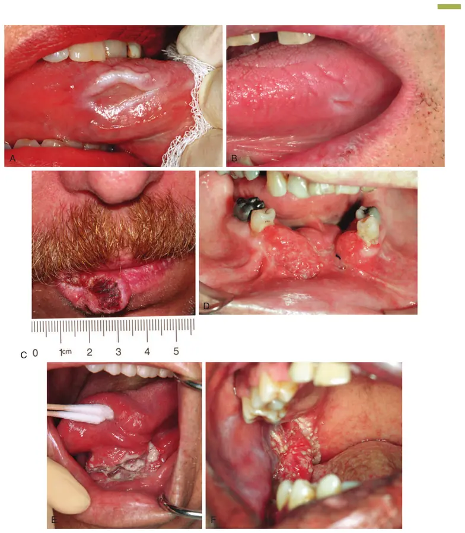

نسخه استخراجشده؛ ترجمه یا تأیید علمی انجام نشده است. وضعیت: captured
فهرستی هفتتایی از ویژگیهایی داریم که ظن بدخیمی را برمیانگیزند — و جالب آنکه نام انگلیسی این هفت مورد به ترتیب الفباست:

و قاعدهی پایش پیش از بیوپسی: هر تغییر تشخیصدادهنشده یا مشکوک در بافتهای دهانی که با ترومای موضعی (و اصلاح منبعش) یا عوامل دیگر توضیحپذیر نباشد، باید طی ۷ تا ۱۴ روز پیگیری شود — با یا بدون درمان موضعی. اگر ضایعه بزرگ یا گسترده شود، ظاهرش تغییر کند، یا آنطور که انتظار میرود به درمان موضعی پاسخ ندهد، بیوپسی معمولاً اندیکاسیون دارد.
و دربارهی لکوپلاکیا — که باید تأکید کرد اصطلاحی بالینی است نه پاتولوژیک: این ضایعات میتوانند دردسرساز باشند، چون تا ۱۵ تا ۲۰ درصد آن نواحی — و ۱۰۰ درصد ضایعات اریتروپلاکیا — میتوانند شواهد بافتشناختی دیسپلازی یا بدخیمی آشکار نشان دهند.
نواحی پرخطر دهان برای پیدایش سرطان: کف دهان، سطوح جانبی و شکمی زبان، و مخاط باکال و لب پایین. و نواحی قرمزی یا دانهدانهشدن در داخل نواحی لکوپلاکیا بهویژه نگرانکنندهاند — بیوپسی برشی از یک یا چند مورد از چنین نواحی مشکوکی عموماً اندیکاسیون دارد.
از یک واقعیت حقوقی شروع کنیم: ناتوانی در تشخیص و ارجاع بهموقع بیمار با وضعیت پاتولوژیک احتمالی، به یکی از دلایل اصلی طرح دعوی در حرفهی پزشکی تبدیل شده است.
و یک قاعدهی صریح دربارهی واگذاری: دندانپزشک نباید معاینهی بیماران برای وضعیتهای پاتولوژیک را به کارکنان کمکی مانند بهداشتکاران دندانی واگذار کند. اگرچه بیشتر بهداشتکاران برای دقت در تغییرات بافت نرم بهخوبی آموزش دیدهاند، مسئولیت نهایی تشخیص وضعیتهای پاتولوژیک — از جمله غربالگری سرطان دهان — بر عهدهی دندانپزشک است، و در آمریکا، در بیشتر ایالتها اگر نه همه، واگذاری این وظیفه قانوناً مجاز نیست.
و اگر تصمیم به ارجاع گرفتی، یک نکتهی عملی که باید بر آن پافشاری کرد: قرار ارجاع باید در حالت ایدهآل پیش از ترک مطب توسط بیمار تنظیم شود — چون اگر گرفتن وقت به خود بیماران واگذار شود، بسیاری به علت ترس، انکار، یا اهمالکاری این کار را نمیکنند. قرار تنظیمشده باید با نامه، فکس، یا ایمیلی از دندانپزشک ارجاعدهنده به متخصص پیگیری شود که جزئیات مورد، نگرانیها، و اعمال درخواستی را شرح دهد؛ و رونوشتی از این مکاتبه در پروندهی بیمار قرار گیرد.
سه نکتهای که در تصمیم «خودم بیوپسی کنم یا ارجاع بدهم» باید بسنجی:
و انتخاب دوم معمولاً بهتر است: این انتخاب معمولاً خدمت بهتری به بیمار است، به شرط آنکه ارجاع سریع و بهموقع اجرا شود. دلیلش هم دو چیز است: بهتر است متخصص ارجاعی ضایعه را پیش از آنکه هر مداخلهی جراحی ویژگیهای بالینیاش را مخدوش کند، ارزیابی کند؛ و بیوپسی میتواند گرههای لنفاوی واکنشی بسازد که احتمالاً به ضایعهی اصلی ربطی ندارند.